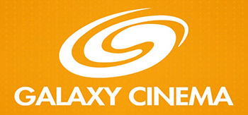

WORKING EXPERIENCES
HISTORY
(in reverse chronological order)
-
Head of Technical @ BHD Co.,Ltd
September 2016 - Present
- Research, Architect, develop & maintain whole Video-on-Demand system.
- Architect and develop Digital Content Delivery system.
- Responsible for business demands high availability and low latency.
- Design and develop Smart Payment method for Smart TV.
- Operating & maintaining live streaming system for OTT apps, IPTV and Smart TV with very high traffic.
- Implementing, operating & maintaining Digital Content Secure (using DRM from Castlab & Verimatrix).
- Architect, develop & maintain CDN system with many secure solutions.
- Architect & manage develop application for all OTT platforms.
- Consulting for internal and external partners about Processing and Streaming Digital Content (FPT IPTV, FPT Play, HTV Cable...).
- Support for TV Station (VTV) for implement Dolby 5.1 audio, Processing & Live Streaming for live programs.
- Advise to the Board of Directors develop information-oriented technical business.
-
IT Manager @ BHD Star Cineplex (web link)
November 2011 - July 2016
- Research and apply new technology: Auto check-in with QR Code, Self-Service check-in with RFID, Ticket Machine,...
- Responsible for all systems & infrastructure of Company (network, software & hardware, POS, camera, signage, access control, public sound…).
- Guarantee all system connected & working stability, response to business demands high availability and low latency (serve an average of 15,000 customers on a daily basis, up-time 99,5%).
- Design and monitoring new cinema Network system.
- Monitoring, managing & maintaining all networks & servers (more than 35 servers).
- Building and maintaining VPN system, Active Directory, DNS, DHCP, Mail server, FTP server, File server, Firewall, Cisco devices, other software.
- Managing IT team provided support for Online & Offline Customer, End-user, Operation, Accounting & Marketing.
- Architect and develop Software with PHP, .NET, SQL Server & MySQL.
- Managing all IT projects (building new branch, renovation, installing and operating world-class software: Vista Entertainment Solutions).
- Advise to the Board of Directors develop information-system-oriented business.
- Providing training for all Management and Non-Management staff.
- Manage & maintenance Website & Mobile App (iOS, Android).
- Building security system & writing IT Policy Documents.
- Building backup plan for all services.
- Deploying, managing Online Services, Loyalty & Customer Care system.
- Building yearly, monthly budget for IT department.
- Building Migrating & Disaster Resolving Plan for whole system.
-
IT Officer @ RMIT International University (web link)
August 2010 - November 2011
- Operating & Support Information System.
- Create & Apply policies to Domain Controller.
- Supporting help-desk team about network, hardware & software of laptop, desktop, printer… etc.
- Deploying Computers & Operating System.
- Support other department system (e.g. Student Database, Student Time System – Student Services).
- Work closely with Academic staffs for resolve all problems about computing & network.
- Support for Test Environment of Academic staffs.
- Managing & monitoring all servers & firewall devices.
- Maintaining all networks & IT devices of campus.
-
IT Specialist @ Galaxy Studio (web link)
June 2008 - August 2010
- Responsible for IT systems (network, internet, servers…).
- Installing , deploying & operating Cinema Management system (Vista).
- Building, managing & maintaining Website & Mobile App (iOS, Android, Windows Phone).
- Supporting to build Galaxy Channel on Zing Social Network.
- Design & monitoring Information System of Galaxy Nguyen Hong Dao (network, telephone, camera, servsers…).
- Building & managing CRM system & all Promotion programs (website, online game & kiosk).
- Maintaining & fixing website technical problems.
- Managing & monitoring all servers & firewall devices.
- Researching & optimizing SEO & ranking task.
- Responsible for website loading time, UI, UX of website.
- Managing Forum.
- Design & produce social online game (Galatown).
- Design all banners of Galaxy & partners.
- Copywriting all website posts.

PROJECTS
-
DANET VOD, first Licensed Video on Demand in Vietnam,
(GeoBlock outside of Vietnam as legal requirement of Content Owner)
(web link),
July 2016 - Present.
Using products below, we designed complete Digital Content Distribution (with encryption) solution, responsible for large number of concurrent user with high transfer speed and low latency.
Customer can use any kind of supported payment method as Credit Card, ATM, and QR Code payment in high security environment.
- CMS: Conversant (HK).
- e-Commerce: MPP (UK).
- Player: Squadeo.
- Payment Gateway: NAPAS, ZaloPay, VISA, MASTER.
- CDN: VNPT.
- DRM: Verimatrix, DRMtoday, Piksel.
- Transcoder: AWS Elemental.


-
VISTA Cinema Management, biggest cinema management solution in the world
(web link).
July 2015 - July 2017.
Using half dispersed model for whole cinema chain, this enterprise solution can manage up to thousands cinema.
- Head Office Module.
- Back Office Module.
- Online Ticketing.
- AutoGate check-in.
- QR Code check-in.
- Radio-frequency identification check-in(RFID).
- Remote order & printing.
RESEARCH IN WORK
I always research new applied technology for our company. Current list of our project:
- Big Data (Social trend - on Social Network)
- Big Data (for our service bahavior)
- CMS for VOD (responsible for specific company requirements)
- Digital Content Delivery with encrytion
 Français
Français Tiếng Việt
Tiếng Việt